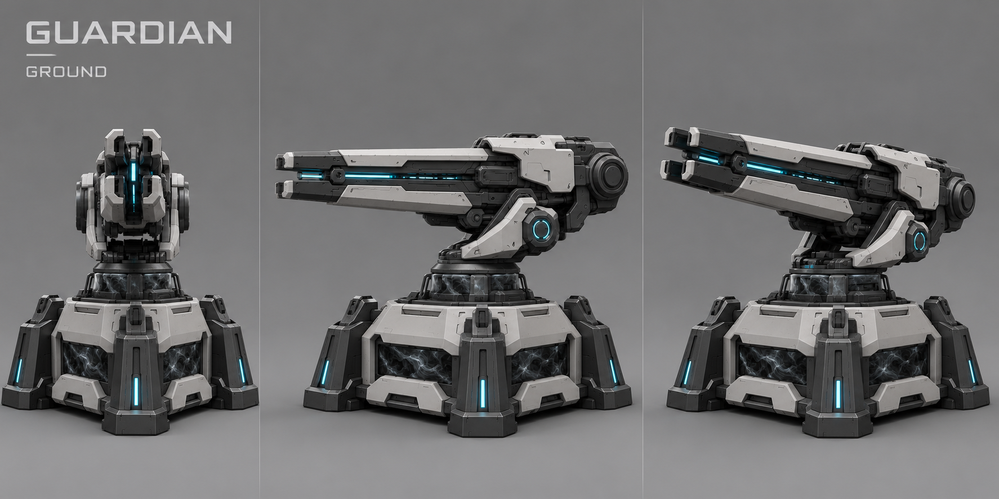
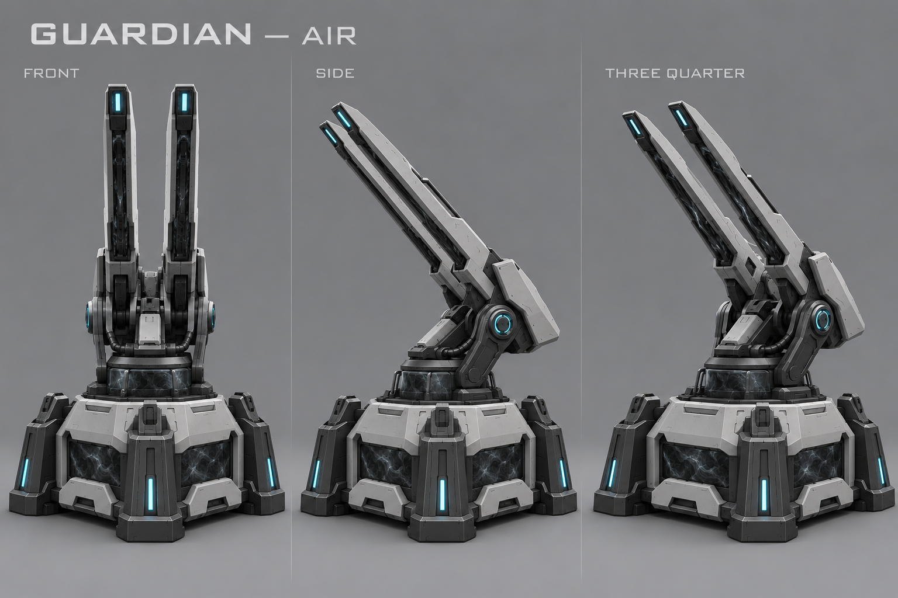
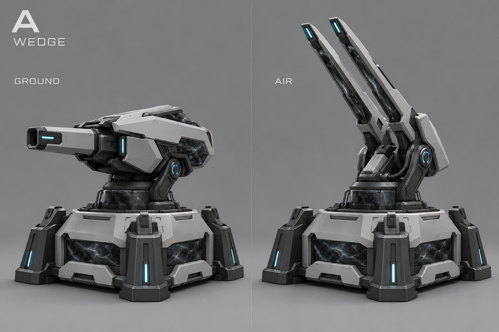
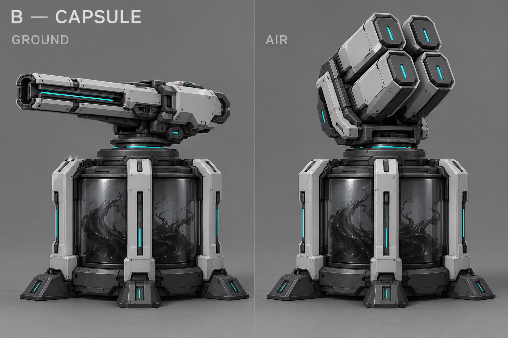
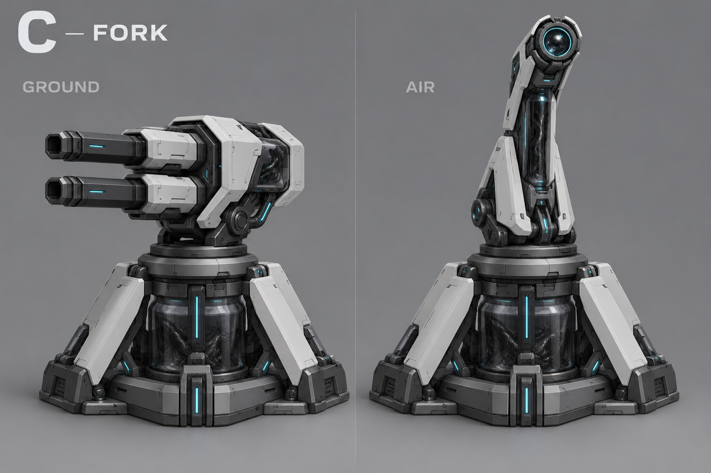
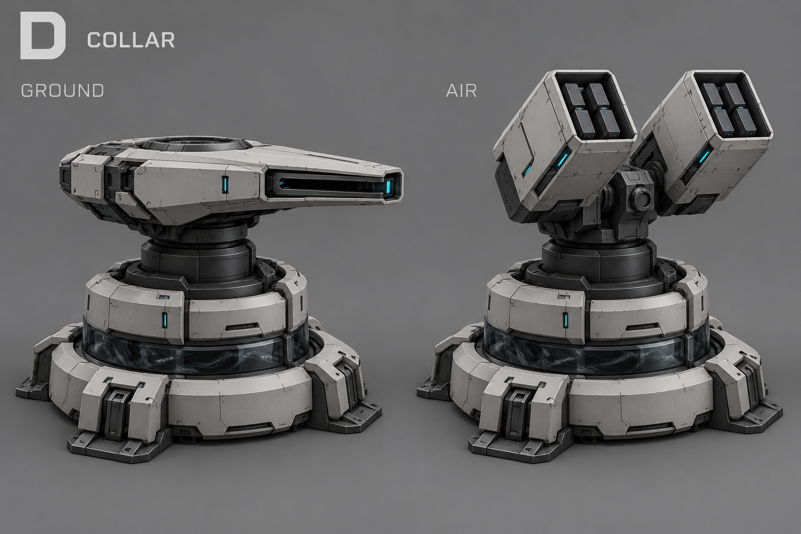
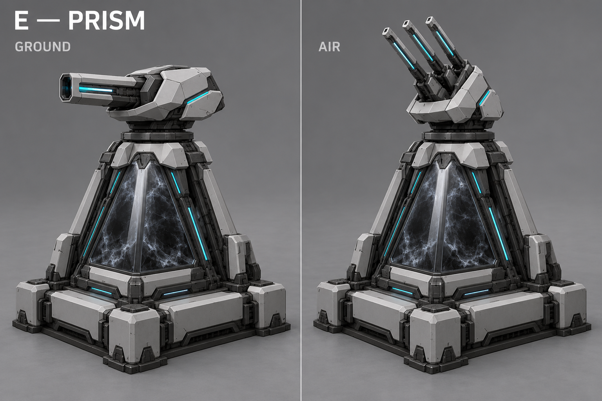
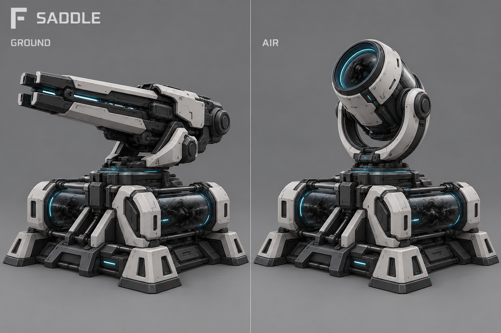

Все концептыСтраж — одна башня, два режима
Выбран A + F: основание и ПВО из A, наземное орудие из F. Слева — наземная форма, справа — ПВО. Основание сохраняется, верхнее орудие перестраивается нанитами. На время перехода башня не стреляет. Текущая гипотеза баланса: 6 секунд перехода, затем 12 секунд отката.
Типы орудий — визуальные предложения. Эти изображения показывают направления дизайна, а не точную геометрию для моделирования. Названия A–F не меняют название постройки.
Выбранный A + F — референсы для моделирования
Два отдельных листа. Основание на них показано преимущественно в 3/4: это художественные референсы, не строгие ортографические чертежи. Единую геометрию основания нужно сохранить в 3D.


История поиска A–F
A — Клин
Низкий клин; в ПВО — поднятая пара направляющих.

B — Капсула
Полупрозрачная капсула; в ПВО — ракетная кассета.

C — Вилка
Открытая вилка: две пушки сменяются высокой оптической головкой.

D — Кольцо
Низкое кольцо; в ПВО — две компактные ракетницы.

E — Призма
Призматическая камера; в ПВО — три поднятых ствола.

F — Седло
Два небольших резервуара; в ПВО — наклоняемый излучатель.

Описание и ограничения · Дизайн-документ